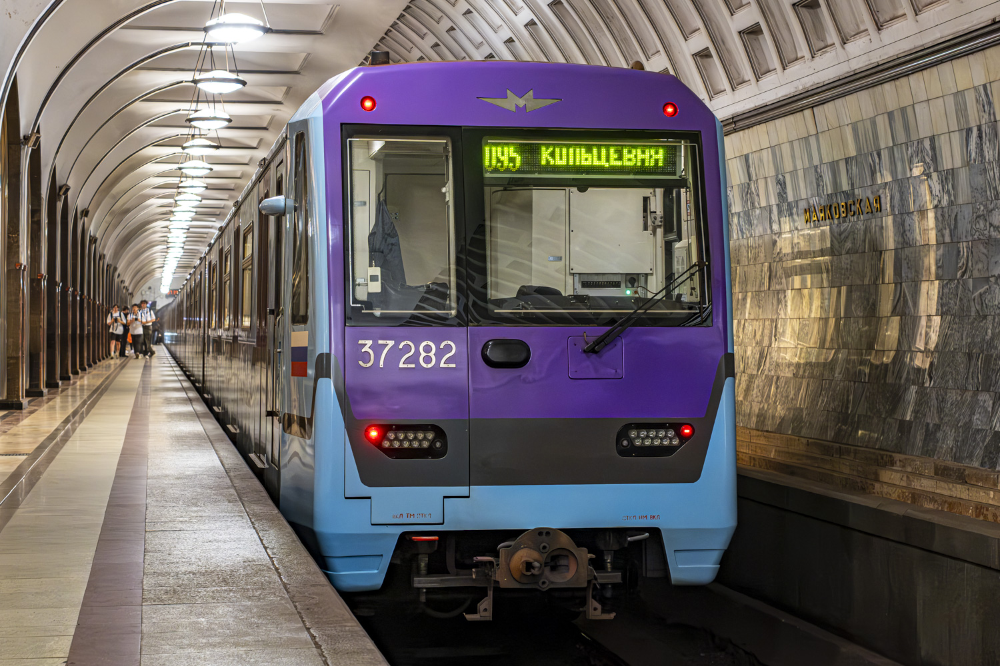
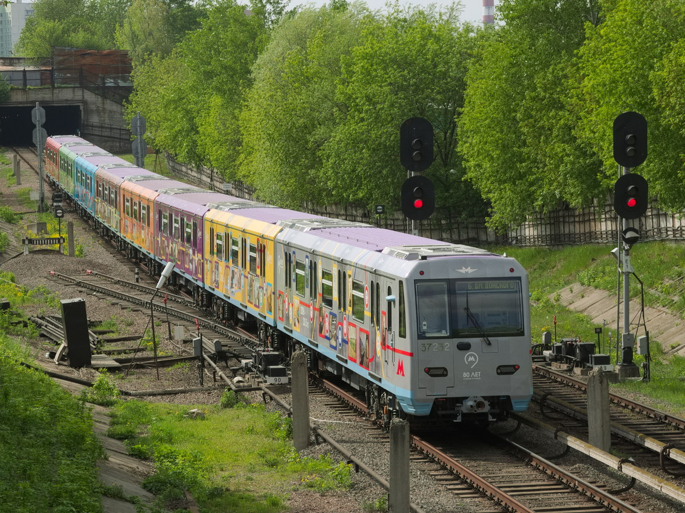
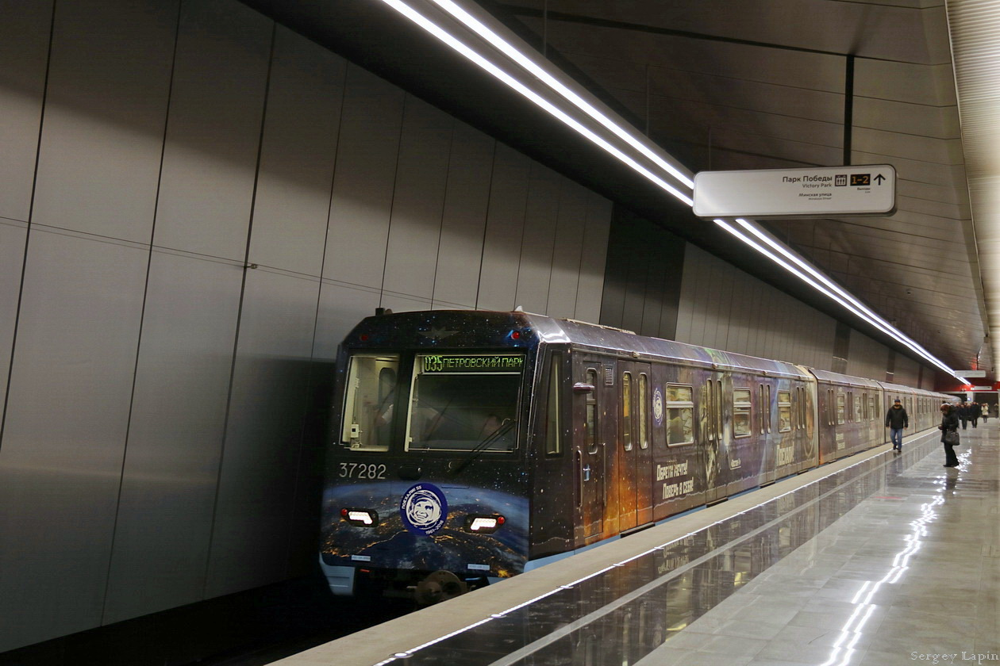
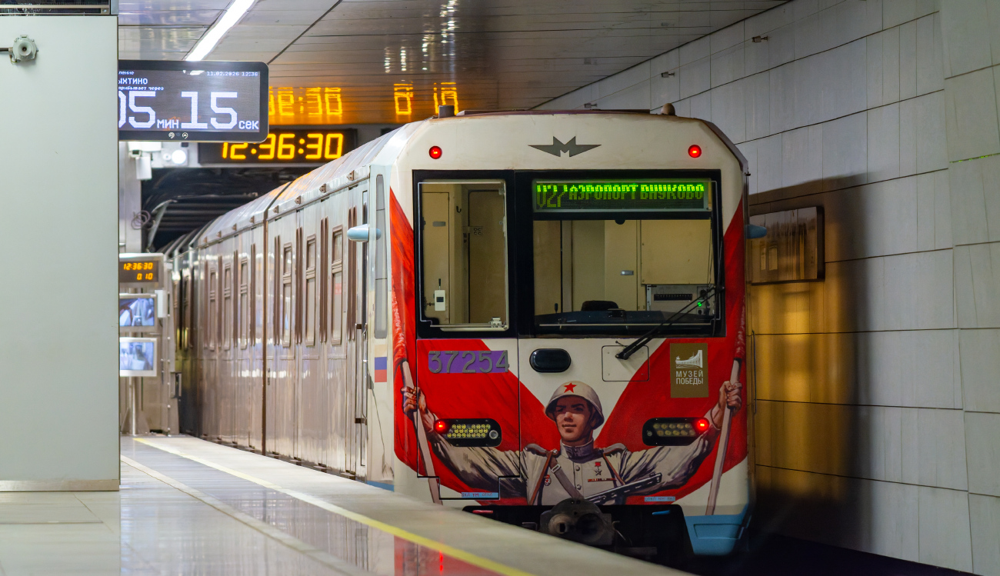
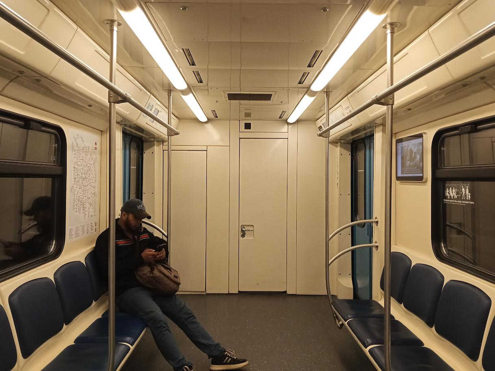

81-760А/761А/763А «Ока»
81-760А/761А/763А «Ока» — модификация электровагонов метрополитена серии 81-760/761 «Ока», изначально изготовленная на ОАО «Метровагонмаш» в г. Мытищи Московской области по заказу ЗАО «Бакинский метрополитен», однако впоследствии переданная в эксплуатацию ГУП «Московский метрополитен».
Это первый электропоезд в Московском метрополитене и России со сквозным проходом через весь состав, а также первый в Московском метрополитене с промежуточными безмоторными вагонами для уменьшения общего веса поезда и его воздействия на железнодорожное полотно.
Общая информация
🏭 Производитель
ОАО «Метровагонмаш» (ТМХ)
Главный конструктор: Аркадий Зайцев
Модель: 81-760А/761А/763А (модификация «Оки»)
🎨 Прозвище
«Баклажан»
Из-за бело-фиолетовой окраски вагонов
🔧 Особенность
Сквозной проход через весь состав — первый в России. Межвагонные переходы типа «гармошка» производства Hübner.
Также первый в Московском метрополитене с промежуточными безмоторными вагонами.
📍 Текущее местонахождение
Москва, Солнцевская линия
Депо: ТЧ-18 «Солнцево»
🍆 Уникальная судьба: Поезда создавались для Баку, но заказчик в лице Бакинского метрополитена изменил техническое задание. «Баклажаны» остались в Москве и стали первыми поездами со сквозным проходом в России.
🔗 Наследие: В дальнейшем на основе вагонов 81-760А/761А/763А «Ока» были изготовлены вагоны 81-765/766/767 «Москва» и 81-775/776/777 «Москва-2020».
История
Поступление в депо «Владыкино»
Первый поезд модификации А поступил в электродепо «Владыкино» Московского метрополитена, где начал проходить обкатку.
Первая поездка с пассажирами
На Серпуховско-Тимирязевской линии состоялась первая поездка с пассажирами состава из восьми вагонов модели 81-760А/761А/763А «Ока».
Именные поезда
Решено сделать два поезда именными: один — в честь 70-летия победы в Великой Отечественной войне, другой — в честь 80-летия Московского метрополитена. 22 апреля 2015 года начал движение поезд «70 лет Великой Победы», 13 мая — «80 лет в ритме столицы».
Передача в депо «Выхино»
Оба состава переданы в депо «Выхино». С 3 февраля 2016 года началась эксплуатация с пассажирами на Таганско-Краснопресненской линии.
Третий поезд — «Космический»
В депо «Выхино» поступил третий электропоезд, сформированный из шести новых промежуточных и двух выпущенных в 2014 году головных вагонов. С 12 апреля начал участвовать в пассажирской эксплуатации в качестве именного «Космического поезда».
Переводы между линиями
Завершена эксплуатация всех трёх поездов на Таганско-Краснопресненской линии. «Поезд Победы» вернулся в депо «Владыкино» и продолжил работу на Серпуховско-Тимирязевской линии. «80 лет в ритме столицы» и «Космический поезд» переданы в депо «Свиблово» и работали на Калужско-Рижской линии, затем вернулись в «Владыкино».
Передача в депо «Солнцево»
Поезда «80 лет в ритме столицы» и «Космический поезд» переданы в депо «Солнцево». С 27 ноября «Космический поезд» эксплуатировался на Солнцевской и Большой кольцевой линиях, с 5 декабря там же — «80 лет в ритме столицы».
«Поезд Победы» в «Солнцево»
В начале февраля 2019 года в «Солнцево» передан «Поезд Победы», с 8 февраля — в пассажирской эксплуатации. В апреле 2019 года оформление поездов «80 лет в ритме столицы» и «Космического» было снято.
🏙️ Сегодня: «Баклажаны» работают на Солнцевской линии в 8-вагонной составности, которая является максимально возможной в Московском метрополитене. На время парада поездов на Кольцевой линии составность сокращается до 7 вагонов.
Тематические оформления
На базе этой модели было реализовано 3 тематических оформления:
🎂 «80 лет в ритме столицы»
Оформление, посвящённое 80-летию Московского метрополитена. Запущен 13 мая 2015 года. Оформление снято в апреле 2019 года.
🚀 «Космический поезд»
Оформление к 55-летию со дня первого полёта человека в космос. С 12 апреля 2016 года. Оформление снято в апреле 2019 года.
🏅 «Поезд Победы»
Изначально — «70 лет Великой Победы» (с 22 апреля 2015 года). В 2016 году переименован в «Поезд Победы».
Технические характеристики
| Параметр | Значение |
|---|---|
| Главный конструктор | Аркадий Зайцев |
| Годы постройки | 2015 |
| Тип токосъёма | Нижний боковой контактный рельс |
| Род тока и напряжение | 750 В постоянного тока |
| Типы вагонов | Мг / Мп / Пп (моторный головной / моторный промежуточный / безмоторный промежуточный) |
| Число вагонов в составе | 2—8 (общий случай); 8 (стандартная эксплуатация на Солнцевской линии); 7 (во время парада поездов на Кольцевой линии) |
| Композиция состава | Мг+Мп+Пп+2Мп+Пп+Мп+Мг |
| Количество дверей | 2×4 |
| Ширина колеи | 1520 мм |
| Материал вагона | Нержавеющая сталь |
| Макс. скорость | 90 км/ч |
| Макс. служебная скорость | 80 км/ч (по АЛС-АРС) |
| Электрическое торможение | Рекуперативно-реостатное |
| Система тяги | Асинхронный привод |
| Тормозная система | Электрическая, электропневматическая |
| Системы безопасности | АЛС-АРС |
Эксплуатация
| Параметр | Значение |
|---|---|
| Страны эксплуатации | Россия 🇷🇺 |
| Метрополитен | Московский |
| Линии | Солнцевская |
| Депо | ТЧ-18 «Солнцево» |
| Годы эксплуатации | с 22 апреля 2015 года |
Сквозной проход: Между вагонами установлены герметичные межвагонные переходы типа «гармошка» производства компании Hübner, обеспечивающие сквозной проход пассажиров по составу и увеличивающие его вместимость.
Фотогалерея

📸 Romach

📸 Mungojerrie

📸 Сергей Лапин

📸 Sakura7777

📸 Solidolych
📸 Фото взяты с transphoto
Нажмите на фото для увеличения
"«Баклажан» — уникальный пример того, как поезда, созданные для другого города, становятся частью Московского метро. Пурпурно-голубые составы с прозвищем, данным за цвет, и сквозным проходом — настоящая находка для пассажиров Солнцевской линии."